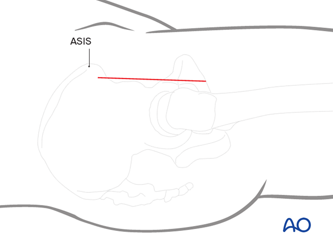
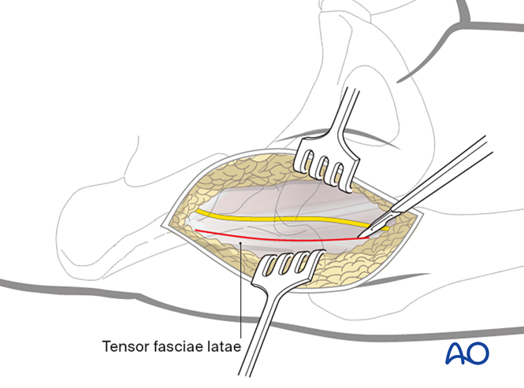
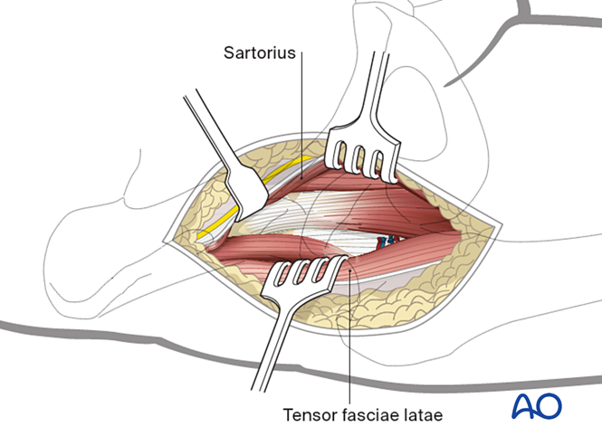
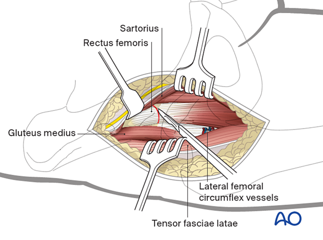
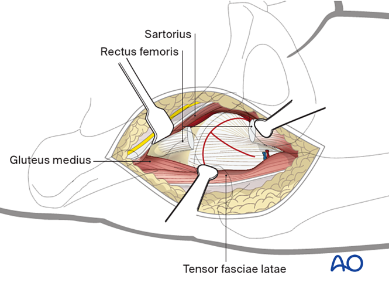
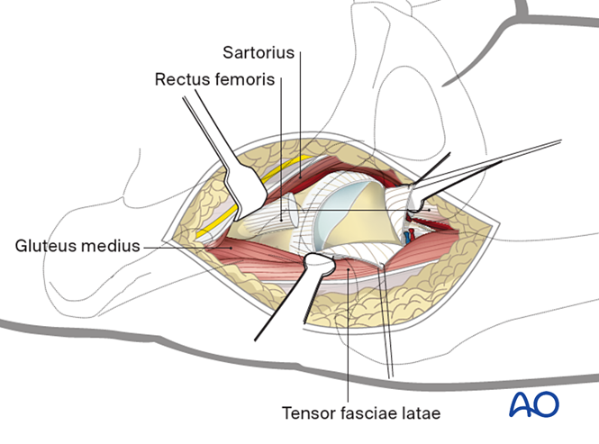
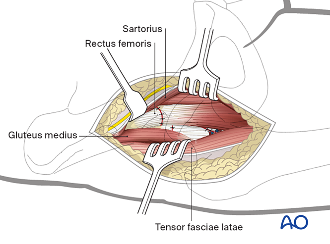

----------Explanations----------
Question 1
Choice 1: AROM assessment of the right lower limb
Correct. Assessing limb AROM helps differentiate whether the condition is caused by pain inhibition, muscle weakness, or true neurological deficit. It is normal that patients may experience hip weakness after THR but significant quadriceps weakness while ankle/toes are spared, may imply of possible femoral nerve injury.
Choice 2: Bilateral lower limb light touch sensation and power
Correct. With a complaint of limb numbness and weakness, a detailed neurology assessment should be performed.
The result confirms a unilateral, peripheral-nerve distribution rather than a spinal cord or root lesion.
Choice 3: Straight leg raising test
Incorrect. The patient denied back pain & paresthesia but complained of LL numbness and weakness. SLR is not indicated as it is unlikely sciatica/disc pathology/nerve root irritation. The sensory and motor deficits are in the femoral nerve distribution. Performing SLR is therefore unnecessary and could cause unnecessary discomfort without adding diagnostic value.
Choice 4: Reflexes of bilateral lower limbs
Correct. Checking reflexes is used to evaluate the integrity of spinal cord, peripheral nervous system and descending motor pathway. The absent right knee jerk (L3-L4 via femoral nerve) with preserved ankle jerk may indicate femoral neuropathy. Negative Babinski signs bilaterally further exclude upper motor neuron or spinal cord involvement. This reinforces the peripheral nerve localization.
Question 2
Choice 1: Immediate surgical exploration to evacuate potential hematoma
Incorrect. Although hematoma can occasionally compress on the femoral nerve after anterior-approach THR. The current clinical presentation is more suggestive of intra-operative nerve stretch/ injury. Exploration of wound may be considered with a confirmed compressive hematoma on imaging. Conservative management and close monitoring are more likely the initial approach.
Choice 2: Protect the knee with a knee extension brace during transfers/ambulation if quad control is poor, initiate gentle ROM and quadriceps exercises, monitor for recovery
Correct. With quadriceps power only grade 1, the patient is at high risk of knee buckling and falls. A knee extension brace provides mechanical stability during transfers and early walking. Gentle active-assisted ROM and quadriceps sets promote nerve recovery and prevent stiffness/contractures.
Choice 3: Plan early mobilization with full weight-bearing and with hip spica
Incorrect. A hip spica brace is designed for hip instability/dislocation prevention. It is bulky, restrictive, and unnecessary in this case. The primary problem is quadriceps weakness, not hip instability. Adding a hip spica would hinder rehabilitation and increase the risk of pressure sores or stiffness without addressing the real issue.
Choice 4: Check prescription of neuropathic pain medications (e.g., gabapentin, lyrica) with ward nurse
Correct. The patient describes the feeling as "numb, decrease in sensation". This is neuropathic in nature. Gabapentin or lyrica can help reduce neuropathic pain and dysesthesia while the nerve recovers. And neurobion may also help in supporting nerve health.
Diagnosis: Femoral nerve injury after THR
Nerve injuries can occur during THR due to compression, traction, ischemia or transection. [1]
The overall incidence of femoral nerve palsy after total hip replacement was 0.21%, with the incidence 14.8-fold higher in patients undergoing anterior hip surgery using either a direct anterior (0.40%) or anterolateral (0.64%) approach. [2]
In the absence of any pathology that would warrant a re-operation, management of a nerve palsy consists of supportive measures: physiotherapy to maintain range of movement in the affected lower limb, bracing during ambulation and night time splinting, and reassurance that the majority of these problems may resolve slowly over time.[3]
Anterior approach (Smith-Petersen) procedure[4]:

Start the skin incision 2 cm lateral to the anterior superior iliac spine (ASIS). Continue the incision 8-10 cm distally.

Incise the fascia over the tensor fasciae latae. The lateral femoral cutaneous nerve lies medially on the fascia.

Bluntly dissect the sartorius interval medially to retract the tensor fasciae latae laterally. This avoids damage to the lateral femoral cutaneous nerve.

Release the direct head of the rectus femoris from the anterior inferior iliac spine, either through the tendon or with an osteotomy. Release the reflected head of this muscle from its more lateral attachment proximal to the hip capsule. Tag the rectus muscle and retract it distally.
Alternatively, if the rectus femoris is small, release the tension on it by flexing the hip and retracting it laterally.

Place two Hohmann retractors laterally and medially around the femoral neck. Incise the capsule in a T-shaped fashion.

Retention sutures medially and laterally allow exposure of the femoral head and neck. Protect the labrum during the capsulotomy.

Wound closure after implant insertion.
References:
1. Hasija, R., Kelly, J. J., Shah, N. V., Newman, J. M., Chan, J. J., Robinson, J., & Maheshwari, A. V. (2018). Nerve injuries associated with total hip arthroplasty. Journal of clinical orthopaedics and trauma, 9(1), 81-86.
2. Fleischman, A. N., Rothman, R. H., & Parvizi, J. (2018). Femoral nerve palsy following total hip arthroplasty: incidence and course of recovery. The Journal of arthroplasty, 33(4), 1194-1199.
3. Su, E. P. (2017). [RETRACTION] Post-operative neuropathy after total hip arthroplasty. The bone & joint journal, 99(1_Supple_A), 46-49.
4. Surgical procedure: AO Surgery Reference, surgeryreference.aofoundation.org.
Case creator: Ms. Agnes Chan, Mr. Thomas Mak
← Back to Homepage